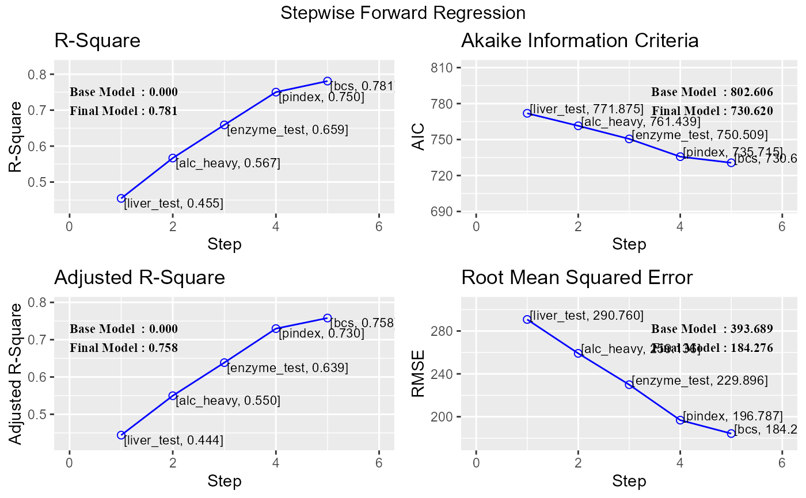

Build regression model from a set of candidate predictor variables by entering predictors based on p values, in a stepwise manner until there is no variable left to enter any more.
ols_step_forward_p(model, ...) # S3 method for default ols_step_forward_p(model, penter = 0.3, details = FALSE, ...) # S3 method for ols_step_forward_p plot(x, model = NA, ...)
| model | An object of class |
|---|---|
| ... | Other arguments. |
| penter | p value; variables with p value less than |
| details | Logical; if |
| x | An object of class |
ols_step_forward_p returns an object of class "ols_step_forward_p".
An object of class "ols_step_forward_p" is a list containing the
following components:
final model; an object of class lm
number of steps
variables added to the model
coefficient of determination
akaike information criteria
bayesian information criteria
sawa's bayesian information criteria
adjusted r-square
root mean square error
mallow's Cp
predictors
ols_step_forward() has been deprecated. Instead use ols_step_forward_p().
Chatterjee, Samprit and Hadi, Ali. Regression Analysis by Example. 5th ed. N.p.: John Wiley & Sons, 2012. Print.
Kutner, MH, Nachtscheim CJ, Neter J and Li W., 2004, Applied Linear Statistical Models (5th edition). Chicago, IL., McGraw Hill/Irwin.
Other variable selection procedures: ols_step_all_possible,
ols_step_backward_aic,
ols_step_backward_p,
ols_step_best_subset,
ols_step_both_aic,
ols_step_forward_aic
# stepwise forward regression model <- lm(y ~ ., data = surgical) ols_step_forward_p(model)#> Forward Selection Method #> --------------------------- #> #> Candidate Terms: #> #> 1. bcs #> 2. pindex #> 3. enzyme_test #> 4. liver_test #> 5. age #> 6. gender #> 7. alc_mod #> 8. alc_heavy #> #> We are selecting variables based on p value... #> #> Variables Entered: #> #> <U+2714> liver_test #> <U+2714> alc_heavy #> <U+2714> enzyme_test #> <U+2714> pindex #> <U+2714> bcs #> #> No more variables to be added. #> #> Final Model Output #> ------------------ #> #> Model Summary #> ----------------------------------------------------------------- #> R 0.884 RMSE 195.454 #> R-Squared 0.781 Coef. Var 27.839 #> Adj. R-Squared 0.758 MSE 38202.426 #> Pred R-Squared 0.700 MAE 137.656 #> ----------------------------------------------------------------- #> RMSE: Root Mean Square Error #> MSE: Mean Square Error #> MAE: Mean Absolute Error #> #> ANOVA #> ----------------------------------------------------------------------- #> Sum of #> Squares DF Mean Square F Sig. #> ----------------------------------------------------------------------- #> Regression 6535804.090 5 1307160.818 34.217 0.0000 #> Residual 1833716.447 48 38202.426 #> Total 8369520.537 53 #> ----------------------------------------------------------------------- #> #> Parameter Estimates #> ------------------------------------------------------------------------------------------------ #> model Beta Std. Error Std. Beta t Sig lower upper #> ------------------------------------------------------------------------------------------------ #> (Intercept) -1178.330 208.682 -5.647 0.000 -1597.914 -758.746 #> liver_test 58.064 40.144 0.156 1.446 0.155 -22.652 138.779 #> alc_heavy 317.848 71.634 0.314 4.437 0.000 173.818 461.878 #> enzyme_test 9.748 1.656 0.521 5.887 0.000 6.419 13.077 #> pindex 8.924 1.808 0.380 4.935 0.000 5.288 12.559 #> bcs 59.864 23.060 0.241 2.596 0.012 13.498 106.230 #> ------------------------------------------------------------------------------------------------#> #> Selection Summary #> ------------------------------------------------------------------------------ #> Variable Adj. #> Step Entered R-Square R-Square C(p) AIC RMSE #> ------------------------------------------------------------------------------ #> 1 liver_test 0.4545 0.4440 62.5119 771.8753 296.2992 #> 2 alc_heavy 0.5667 0.5498 41.3681 761.4394 266.6484 #> 3 enzyme_test 0.6590 0.6385 24.3379 750.5089 238.9145 #> 4 pindex 0.7501 0.7297 7.5373 735.7146 206.5835 #> 5 bcs 0.7809 0.7581 3.1925 730.6204 195.4544 #> ------------------------------------------------------------------------------# stepwise forward regression plot model <- lm(y ~ ., data = surgical) k <- ols_step_forward_p(model)#> Forward Selection Method #> --------------------------- #> #> Candidate Terms: #> #> 1. bcs #> 2. pindex #> 3. enzyme_test #> 4. liver_test #> 5. age #> 6. gender #> 7. alc_mod #> 8. alc_heavy #> #> We are selecting variables based on p value... #> #> Variables Entered: #> #> <U+2714> liver_test #> <U+2714> alc_heavy #> <U+2714> enzyme_test #> <U+2714> pindex #> <U+2714> bcs #> #> No more variables to be added. #> #> Final Model Output #> ------------------ #> #> Model Summary #> ----------------------------------------------------------------- #> R 0.884 RMSE 195.454 #> R-Squared 0.781 Coef. Var 27.839 #> Adj. R-Squared 0.758 MSE 38202.426 #> Pred R-Squared 0.700 MAE 137.656 #> ----------------------------------------------------------------- #> RMSE: Root Mean Square Error #> MSE: Mean Square Error #> MAE: Mean Absolute Error #> #> ANOVA #> ----------------------------------------------------------------------- #> Sum of #> Squares DF Mean Square F Sig. #> ----------------------------------------------------------------------- #> Regression 6535804.090 5 1307160.818 34.217 0.0000 #> Residual 1833716.447 48 38202.426 #> Total 8369520.537 53 #> ----------------------------------------------------------------------- #> #> Parameter Estimates #> ------------------------------------------------------------------------------------------------ #> model Beta Std. Error Std. Beta t Sig lower upper #> ------------------------------------------------------------------------------------------------ #> (Intercept) -1178.330 208.682 -5.647 0.000 -1597.914 -758.746 #> liver_test 58.064 40.144 0.156 1.446 0.155 -22.652 138.779 #> alc_heavy 317.848 71.634 0.314 4.437 0.000 173.818 461.878 #> enzyme_test 9.748 1.656 0.521 5.887 0.000 6.419 13.077 #> pindex 8.924 1.808 0.380 4.935 0.000 5.288 12.559 #> bcs 59.864 23.060 0.241 2.596 0.012 13.498 106.230 #> ------------------------------------------------------------------------------------------------plot(k)# final model k$model#> #> Call: #> lm(formula = paste(response, "~", paste(preds, collapse = " + ")), #> data = l) #> #> Coefficients: #> (Intercept) liver_test alc_heavy enzyme_test pindex bcs #> -1178.330 58.064 317.848 9.748 8.924 59.864 #>